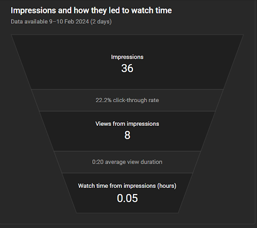
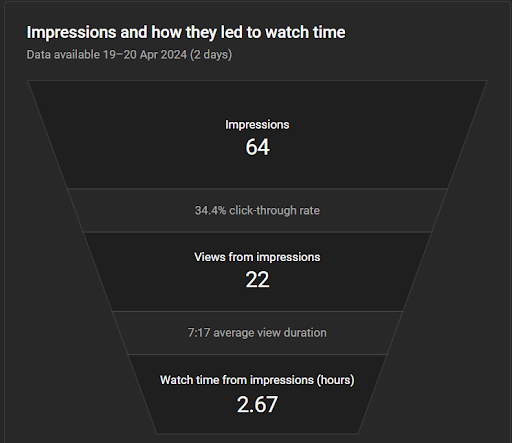
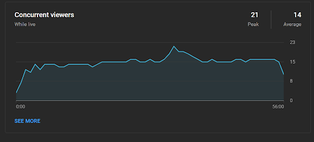
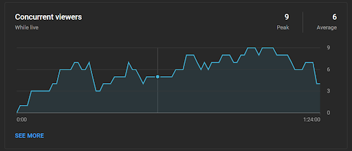

| Topic | Activity | Time | Time Allotment(mins) |
Screen | Audio |
|---|---|---|---|---|---|
| Countdown to stream and preparation | We will be preparing our equipment and double checking if everything is working (Stream is not yet starting at this time) | 1:30PM - 2:00PM | 30 | Stream starting soon screen and countdown | Video Audio/mic |
| Introducing ourselves | We will be introducing ourselves. Who we are and also discussing the plan of the days stream | 2:00PM-2:05PM | 5 | Sprites and stream layout | Video Audio/mic |
| Previous stream recap | After Introducing ourselves, we will be making a small recap or recollection of what happened in our previous stream | 2:05 - 2:10PM | 5 | Streaming the Minecraft gameplay | Video Audio/mic |
| Story discussion and playing | While we build random things in Minecraft, an AI voice will read out the chosen stories where we will start the discussion on the story AFTER the story is read out loud. We will break down the story and try and analyze it to pick out the causes and effects of the TikTok addiction. TikTok story 1: https://www.reddit.com/r/offmychest/comments/16fp804/my_wife_is_addicted_to_making_up_reddit_stories/ TikTok story 2: https://www.reddit.com/r/CasualConversation/comments/10z0rbp/not_to_be_dramatic_but_after_deleting_tiktok_i/ (Extra)TikTok story 3: https://www.reddit.com/r/DecidingToBeBetter/comments/r4tmlq/deleted_tiktok_for_the_sake_of_my_mental_health/ (Extra)TikTok story 4: https://www.reddit.com/r/TorontoDriving/comments/17rtwjq/imagine_being_so_addicted_to_tiktok_you_have_to/ (In any case this is used, the video in the post will be streamed for the viewers to also see) There are Extra stories in any case we do not reach 45 minutes. | 2:10PM - 2:4o PM | 10 | Streaming the Minecraft gameplay | Video Audio/mic |
| Q&A and small discussion with the viewers | We will be entertaining the questions and engaging into discussions with the viewers | 2:40 - 2:55 PM | 15 | Sprites and stream layout | Video Audio/mic |
| Closing and saying goodbyes to the audience | After entertaining the viewers we will be ending the stream and thanking the audience into tuning in | 2:55 - 3:00 | 5 | Stream ended video | Video Audio/mic |
.png)
.png)
According to the analytics, the previous stream has reached 235 chat messages while on the recent stream it decreased to 179 chat messages but on the other hand the recent stream has increased its reactions to 324 compared to the old stream that's only 237. By this means, we have lessened our viewer interactions but have gained a lot of reactions on our recent stream compared to the previous stream.
.png)
.png)
The average view duration has increased from 5:37 on the previous stream to 7:34 on the most recent stream. The average percentage watch in the previous stream was 14.3% and an average of 25.1% on the recent stream. We can see that the average watch duration from the old to the recent stream has increased by 11.2%. As opposed to the previous stream, a gameplay of minecraft was shown on the stream and had kept the viewers watching while having them listen to the stories. Since the current generation is accustomed to watching and listening to two different things at once, this strategy helped to increase the average watch duration.
 Comparing the two streams, the Impressions has increased from 36 to 64 with a 34.4% click-through rate. From having 0:20 average view duration, the recent stream has reached 7:17 average view duration. The watch time from impressions(hours) has notably increased as the previous stream is only 0.05 and the recent stream raised to 2.67.With this data, particularly in terms of impressions, viewer engagement, and watch time, highlighting its enhanced effectiveness in capturing and retaining audience attention.
 In the previous stream we had an average of 14 viewers during the live stream and had 21 peak(s), while on the recent stream we had an average of 6 viewers and had 9 peak(s) during the live stream. This evaluation shows that the comparison of the previous and recent stream displays a notable difference in viewers metrics as the recent stream has a lower peak and average compared to the previous stream.

|
|
B4C Network Youtube |
B4C Network Instagram |